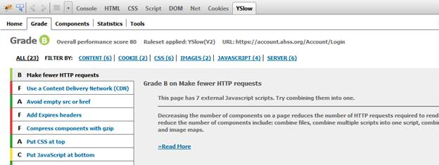
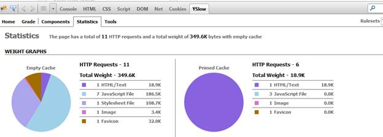

As web developers we have plenty of worries from ensuring our apps work on IE7 to Chrome 34 million,
looking good on mobile and tablet devices, and most importantly, meeting our ever changing
customer requirements. One item that can be overlooked is optimizing your website to reduce
its weight in order to increase the download speed.
If gone unchecked, it would be easy to develop a site that requires the client browser to download
500kb or more per page and 30+ HTTP requests. This isn’t terribly high, but for mobile users it is
just enough of a delay for them to give up on browsing to your site. Not only that, you’re server
is kept busy doing unnecessary work.
I’m going to show you a few simple tips that will dramatically decrease the weight of your website.
Page weight consists of the size of what is to be downloaded by the browser and the number of HTTP
requests that it takes to download the website. The lighter the website, the quicker it will be to
download for your users.
- Activate Gzip compression. By activating Gzip, IIS will send the zipped files to the client browser thus saving you quite a bit on the size of the download.
- Bundle. By bundling, you reduce the number of css files downloaded into a single file so if you had 5 css files for your site, you’d now have only 1 thus saving you 4 extra http requests. This should be done for both css and javascript files.
- Minify. Now that you’ve bundled your css and javascript files into neat packages, it’s time to shrink the size of the files. Minification is simply the process of removing comments and white space. It also does some other things like rename functions to a meaningless letter but what it really does is makes the file much smaller in size which is what we want.
- Optimize images. Don’t just trust your graphic artist, take the time to optimize every image yourself. It’s very easy using Web Essentials.
- Base 64 encode small images. If you use a lot of smaller images <= 5k in size, you should encode them into your css file. This will reduce the number of http requests.
- Cache me if you can. Consider caching your javascript and css files by setting them to not expire for a long period of time. By doing this, the next time someone goes to your website, she will not need to download those files. The only caveat is when you make a change to your javascript or css and would like the user to get the latest file. To get around this, you can write code to change the path of your file every time it changes and use URL rewrite to handle the file path.
- Favicon.ico. A lot of times this icon file is way bigger than it needs to be. Simply reduce the size of this file by opening it in visual studio and removing all the icon sizes except 16X16.
So how do I do all of this?
Good question. You need tools. To be more specific, you need:
- Web Essentials. This is an extension for visual studio that is a must have for any developer. With Web Essentials, you can bundle, minify, optimize images, base 64 encode images and a bunch of other stuff.
- Yslow. This is a firefox add on that gives you a grade and tells you exactly step by step what can be done in order to optimize your site.


One more thing, checkout this Check list to get you going.